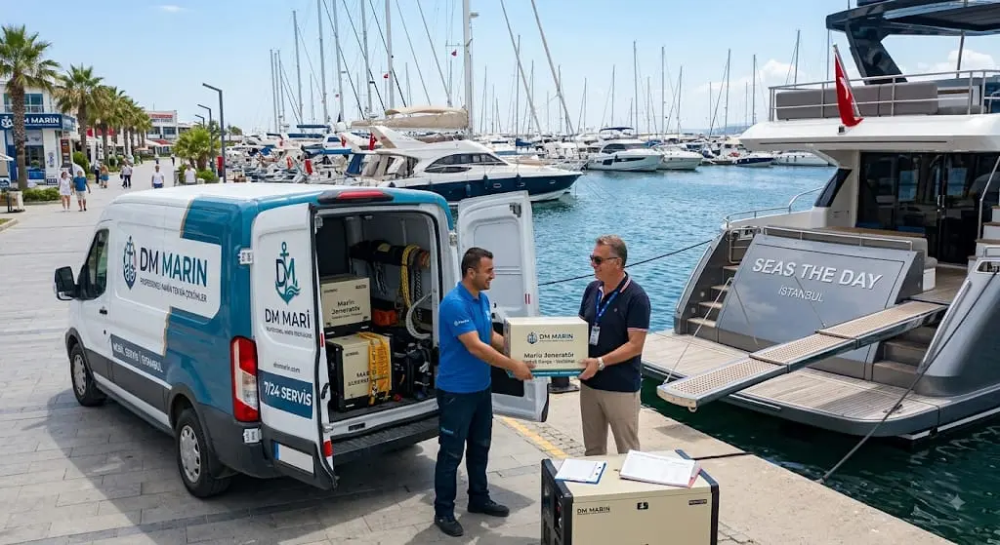
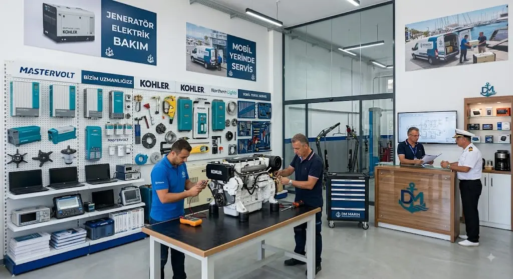
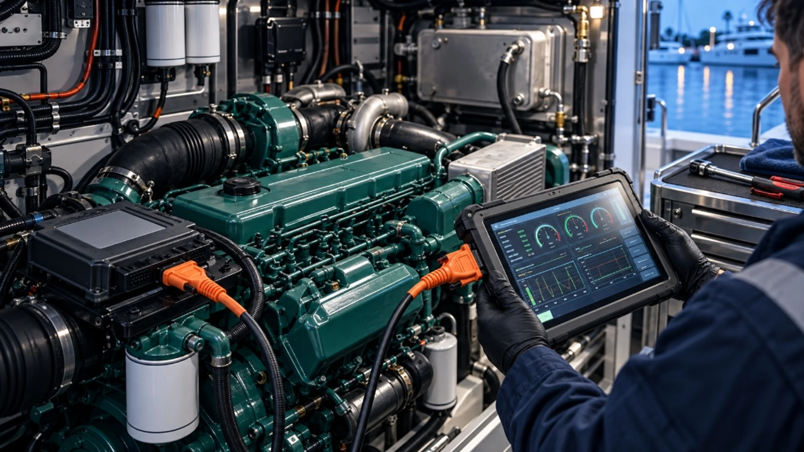
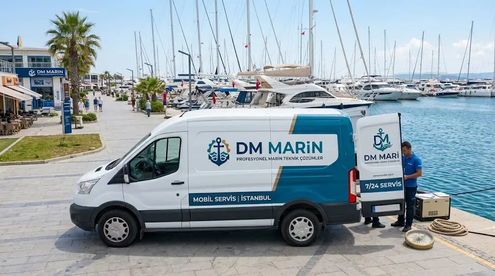
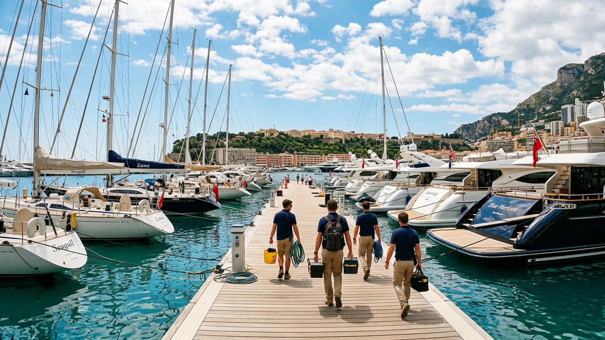
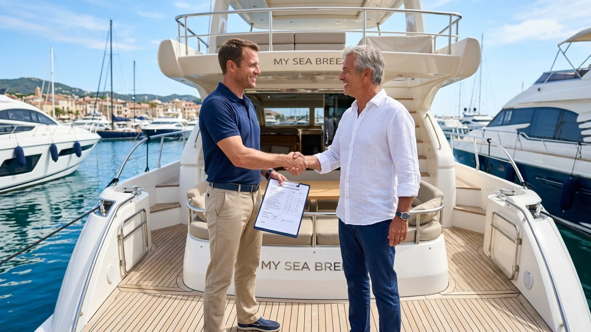

!
Önizleme moduDeğişiklikler yalnızca bu tarayıcıda taslak olarak saklanır. Siteyi gerçekten güncellemek için güvenli backend ve yayınlama bağlantısı kurulmalıdır.
Altyapı durumu →Günaydın, DM MARİN
Web sitesi içeriğini, görselleri ve SEO hazırlığını tek noktadan takip edin.
Yayın hazırlığı
2 adım kaldıAna sayfaV1 + V2 güçlü bölümler birleşti
HazırTeknik SEOMeta, şema ve sitemap mevcut
Hazırdmmarin.comDNS henüz yayına yönlendirilmedi
BekliyorGüvenli yönetimBackend ve kullanıcı girişi gerekiyor
BekliyorHızlı işlemler
Site İçeriği
Ana sayfadaki temel iletişim ve açılış metinleri için cihaz içi taslak oluşturun.
Açılış ve iletişim
TaslakHizmetler
Sitede gösterilecek hizmetler için cihaz içi taslak görünürlük ayarları.
⋮⋮
Motor ve Mekanik BakımPeriyodik bakım, teşhis ve onarım
⋮⋮
7/24 Mobil Marin Servisİstanbul ve Marmara’da yerinde müdahale
⋮⋮
Marin JeneratörArıza tespiti, bakım ve onarım
⋮⋮
Elektrik & ElektronikÖlçüm, kontrol ve teknik çözüm
⋮⋮
Yedek ParçaMarka ve modele uygun parça desteği
⋮⋮
Periyodik BakımPlanlı motor ve yardımcı sistem bakımı
Görseller
Şu anda yayında kullanılan optimize edilmiş DM MARİN görselleri.

Ana kapakMobil servis & marina

AtölyeMotor ve mekanik bakım

Teknik teşhisCihazlı arıza tespiti

Mobil ekipYerinde servis aracı

Servis noktasıMarina ve ekip

Kontrol & teslimMüşteri iletişimi
SEO Ayarları
Arama sonuçlarında kullanılacak ana başlık ve açıklama için taslak hazırlayın.
Arama görünümü
Alan adı bağlandığında canonical ve sitemap bu adreste çalışacak.
Teknik kontrol
Tek bir H1 başlığı
LocalBusiness şeması
FAQ yapılandırılmış verisi
Görsel açıklama metinleri
Mobil uyumlu tasarım
Search Console bağlantısı bekliyor
GA4 ölçüm kimliği bekliyor
Servis Talepleri
Form ve iletişim talepleri backend bağlandıktan sonra burada listelenecek.
Henüz merkezi talep kaydı yok
Mevcut sitedeki form WhatsApp mesajı hazırlar; kullanıcı son gönderimi kendisi yapar. Talepleri burada görmek için veritabanı ve güvenli API bağlantısı kurulmalıdır.
Ayarlar ve Altyapı
Alan adı ile gerçek yönetim paneli için tamamlanacak bağlantılar.
Alan adı
DNS bekliyordmmarin.comAlan adı sizde. Statik site için ayrıca ücretli hosting zorunlu değil; GitHub Pages veya Vercel’e yönlendirilebilir.
BağlanabilirGerçek panel için gerekenler
Güvenli yönetici girişi
Kalıcı veritabanı
Form ve servis talebi kayıtları
Görsel yükleme alanı
Tek tuşla yayınlama